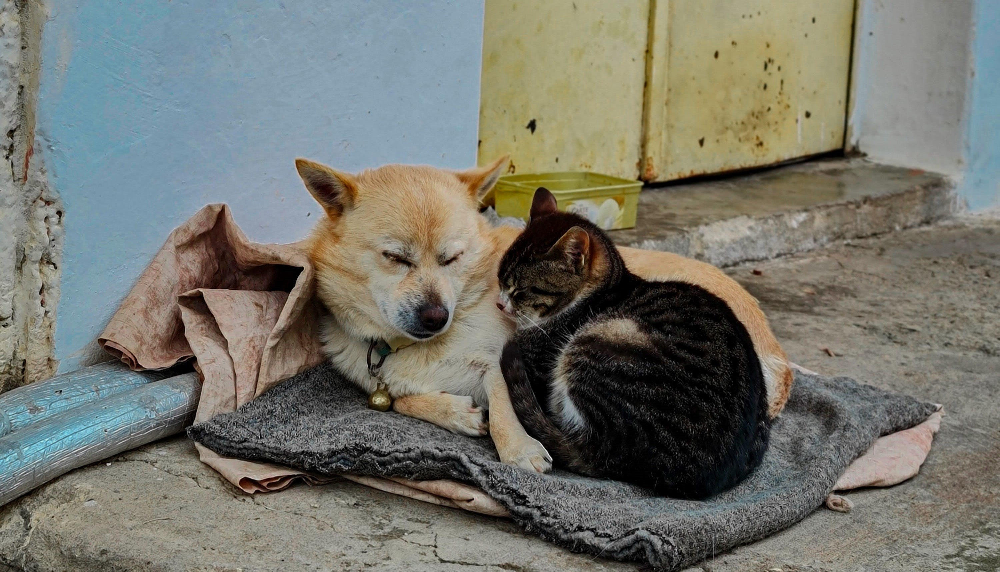

Cadastre-se, nos conheça, e tenha acesso a nossas ferramentas.
Utilize nossa poderosa arma de localização. Seu pet espera por você.
Você achou seu fofucho. Compartilhe sua experiência!
Tecnologia e amor em um só, em busca do seu xodó,
Nosso projeto propõe oferecer aos moradores de Ribeirão Pires uma ferramenta versátil e gratuita, que facilitará o compartilhamento de informações entre moradores à respeito de seus animais perdidos.
Como assim? Muito simples! Nosso site terá uma IA (Inteligência Artificial) que filtrará as informações colocadas tanto pelos donos dos PETs sumidos, como pelos moradores que encontram estes PETs!
Através de um mostruário público, os moradores poderão prestar características (físicas ou comportamentais) do animal, que se por acaso tiver sido encontrado, serão as mesmas que as da pessoa que o achou colocou no site. Caso as informações do bichinho achado casem de fato com as que o dono colocou, a opção de um chat privado aparecerá, onde serão disponibilizadas informações pessoais como endereço, telefone, etc. de quem achou o animal, sendo assim possível buscá-lo e levá-lo para seu lar de volta.

É importante enfatizar que o site não fornece nenhum tipo de recompensa em dinheiro para ambos lados, mas se por acaso houver, deverá ser feita fora do site com a conscientização dos envolvidos, tomando toda e qualquer responsabilidade para si.
AMP (Achei Meu Pet): A principal ferramenta para encontrar animais perdidos.
Uma IA de reconhecimento que utiliza inteligência artificial para escanear e diferenciar animais, facilitando a busca pelo seu pet.
Escaneie o seu pet e deixe o nosso site encontrar animais semelhantes usando a poderosa tecnologia de inteligência artificial (IA).
Você pode fornecer informações detalhadas, como raça, tamanho e características individuais do seu animal de estimação, como orelhas grandes (levantadas/caídas), cor de pelo, olhos e manchas.
Use nossa tecnologia de IA para encontrar animais semelhantes. Capture ou selecione uma foto de alta qualidade, bem iluminada e com seu pet claramente visível para melhores resultados.
Compartilhe o comportamento do seu pet para identificação precisa.
Para uma identificação precisa, informe no formulário dados como porte, sexo, local, onde foi perdido e descrição detalhada do seu pet.
Responda o questionário de forma detalhada, abordando hábitos, temperamento e demais características do seu pet. Quanto mais completo e preciso for o relato, maior a precisão na identificação do seu animal.